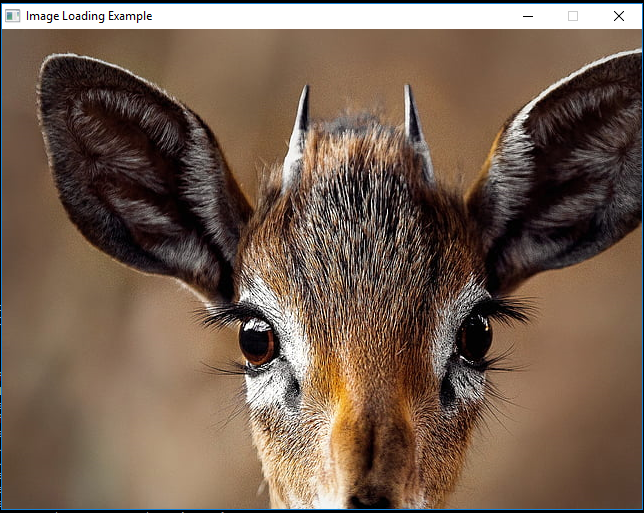

Last updated: 16/10/24
How to Load Images in Raylib Using Image
In Raylib, an Image is a 2D bitmap data structure used for manipulation and loading purposes. It stores the image's pixel data in CPU memory, which allows you to perform operations like resizing, cropping, or even pixel-by-pixel modifications before converting it into a texture for GPU rendering.
Note: An Image is different from a Texture2D. Once an Image is loaded and processed, it can be converted into a Texture2D for rendering on the screen, which resides in GPU memory.
Basic Steps to Load an Image
To load and display an image in Raylib, you need to follow these basic steps:
Initialize Raylib.
Load the Image from a file.
Convert the Image to a Texture.
Render the Texture on the screen.
Unload resources after use.
Let’s walk through an example step-by-step.
Step 1: Initialize Raylib
Before loading any images, you need to initialize Raylib with the proper window size and other settings. You can do this by calling InitWindow() and setting the dimensions of your game window.
#include "raylib.h"
int main() {
// Initialize the window
InitWindow(800, 600, "Image Loading Example");
// Set the target FPS (frames per second)
SetTargetFPS(60);
// Main game loop
while (!WindowShouldClose()) {
// Update and draw the game
BeginDrawing();
ClearBackground(RAYWHITE);
// TODO : image drawing
EndDrawing();
}
// Close window and OpenGL context
CloseWindow();
return 0;
}
Step 2: Load an Image from a File
To load an image, use the LoadImage() function, which takes a file path as its argument and returns an Image struct. In this example, let’s assume we have an image called image.png located in the same directory as our executable.
// Load the image from a file
Image my_image = LoadImage("image.png");
Step 3: Convert the Image to a Texture
Since Raylib renders using OpenGL, it’s necessary to convert the Image into a Texture2D before rendering. This is done using LoadTextureFromImage().
// Convert the image to a texture for rendering
Texture2D texture = LoadTextureFromImage(my_image);
// Once converted, you no longer need the Image object in CPU memory
UnloadImage(my_image);
Step 4: Draw the Texture
Now that we have the texture ready, we can render it on the screen using the DrawTexture() function.
// In the game loop, render the texture
while (!WindowShouldClose()) {
BeginDrawing();
ClearBackground(RAYWHITE);
// Draw the texture at position (200, 150)
DrawTexture(texture, 200, 150, WHITE);
EndDrawing();
}
Step 5: Unload Resources
Once you’re done with the texture, make sure to unload it to free up GPU memory. This is done with the UnloadTexture() function.
// Before closing the window, unload the texture
UnloadTexture(texture);
Full Example Code
Here’s the complete code for loading and displaying an image:
#include "raylib.h"
int main() {
// Initialize window
InitWindow(800, 600, "Image Loading Example");
// Load an image and convert it to a texture
Image my_image = LoadImage("image.png");
Texture2D texture = LoadTextureFromImage(my_image);
UnloadImage(my_image); // We no longer need the CPU-side image data
// Set target FPS
SetTargetFPS(60);
// Main game loop
while (!WindowShouldClose()) {
// Update and draw
BeginDrawing();
ClearBackground(RAYWHITE);
// Draw the texture on the screen
DrawTexture(texture, 200, 150, WHITE);
EndDrawing();
}
// Unload the texture when done
UnloadTexture(texture);
// Close window and OpenGL context
CloseWindow();
return 0;
}
In my case, i loaded an animal photo.png i downloaded online. Here's the output :
And as you see, the image didn't fit properly to the screen so in the upcoming lessons we will learn how to modify images
Conclusion
Raylib doesn’t support JPEG images by default, but you can enable it with precompiled binaries that include JPEG support. In this tutorial, all images are in PNG format, so you won’t need to worry about JPEG files. Raylib makes image loading and rendering simple with its Image and Texture2D types. The steps are straightforward:
Load an Image using LoadImage().
Convert it to a Texture2D with LoadTextureFromImage().
Render it using DrawTexture().
Unload your resources to prevent memory leaks.
Using these tools, you can easily integrate 2D images into your game, whether for backgrounds, characters, or UI elements. Once you grasp these basics, you can start exploring other powerful features Raylib offers for image manipulation.